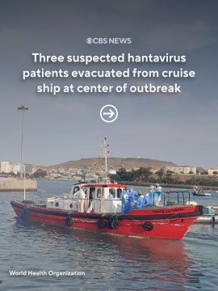
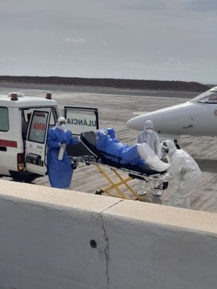
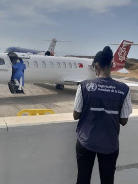
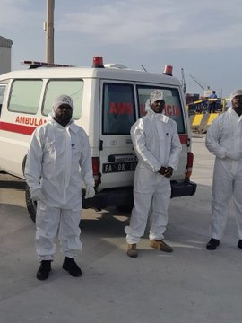
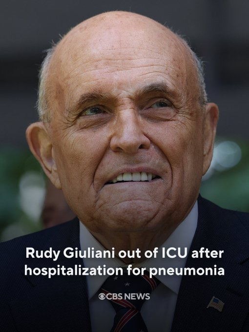
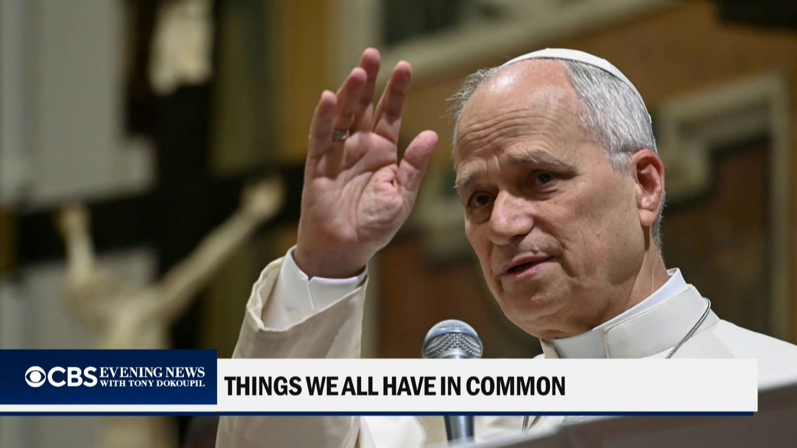
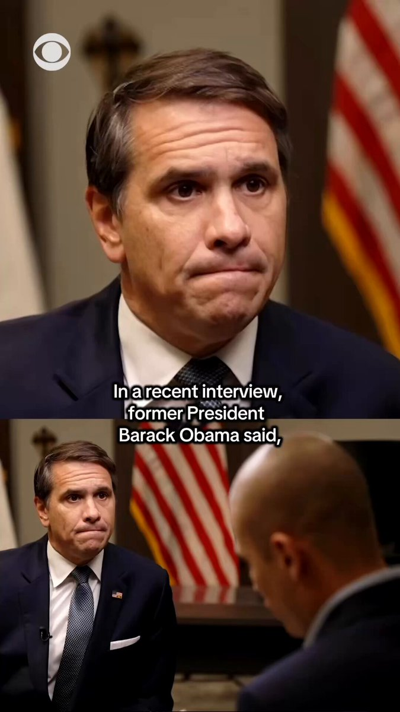
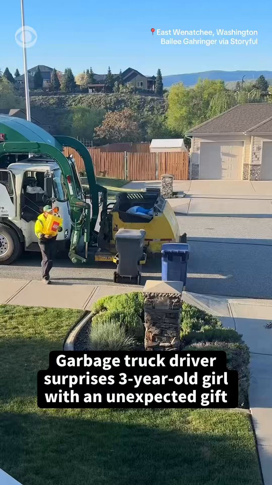

@CBSNews
📝 原文: FBI searches office of L. Louise Lucas, Virginia lawmaker who helped lead redistricting effort
🇨🇳 译文: FBI 搜查了帮助领导选区重新划分工作的弗吉尼亚州议员 L. Louise Lucas 的办公室

🕒 2026-05-07T02:30:00+00:00
| 来源 | 旧窗口内数量 | 本次新增 | 本次淘汰 | 当前窗口内共有 |
|---|---|---|---|---|
| 推文 + Dawn 新闻 | 0 | 39 | 0 | 39 |
| ARY News | 0 | 0 | 0 | 0 |
注：淘汰数 = 旧窗口内数量 + 本次新增 - 当前窗口内共有













暂无文章。